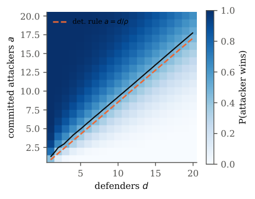
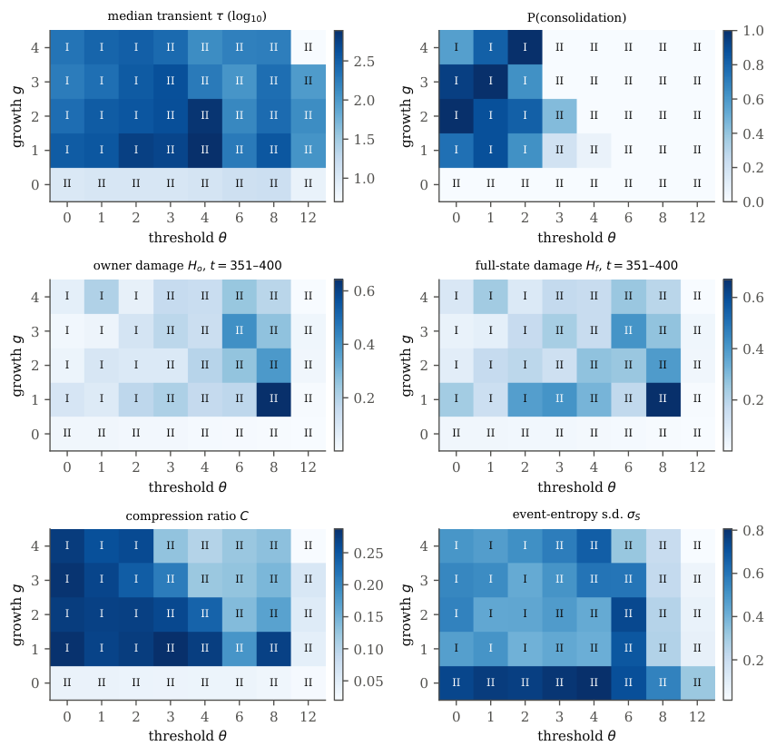
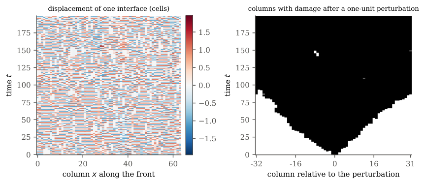

Formal properties of a Risk-derived cellular automaton (radius bounds, irreversibility, finite-time freezing, locality) are machine-checked in Lean 4 without sorry.
Abstract
We formulate the attack and fortification rules of the game Risk as a synchronous cellular automaton on a graph, with battles resolved by exact dice odds. We prove, and verify in Lean, that for the default exchange ratio the rule has radius 6, or 5 for deterministic battles with a positive attack threshold, both attained; that its deterministic form is irreversible except at the highest attack thresholds without growth and with fortification absent or inactive; that without troop growth it freezes in finite time; and that the dynamics near an interface is locally determined. The coupling of the ownership field to a troop field separates frozen domains from active fronts: with a positive attack threshold, saturated domains cannot be conquered, while interfaces with heterogeneous troops keep fighting. In 14252 runs, with attractors classified operationally in Wolfram's scheme, raising the attack threshold takes the system from dominance by one faction to a frozen fragmented partition. The share of the largest faction drops between the same two threshold values at every size up to L=128, in a step about 0.5 wide under a continuous threshold (L=64-96), whereas the probability of complete consolidation is a size-dependent crossover governed by saturated minority domains. Long-period attractors combine spatially fixed local oscillators; apparent class-IV gliders are artefacts of index-ordered tie-breaking. Straight fronts stayed within two cells of their initial position for up to 500,000 steps, over which they are one-dimensional automata with non-recurrent, incompressible dynamics and positive Lyapunov speeds, constant for L>=48. Compared with mean-field and random-regular-graph controls, the lattice lengthens conflicts about twentyfold and clusters conquest: a cell next to a fresh conquest is about five times as likely as average to be conquered next, against 1.1-1.5 in the controls.
Problem
The attack and fortification rules of the game Risk have not previously been studied as a spatial dynamical system. Mathematical work on Risk has treated single battles as Markov chains, which gives no spatial information. The paper asks what formal properties such a rule has and how its long-run dynamics depend on the attack margin.
Approach
Risk's combat is written as a synchronous cellular automaton on a graph, with battles resolved by exact dice odds. The authors prove that the rule has bounded radius, is irreversible, freezes without growth, and is locally determined near interfaces. An independent Lean 4 implementation, with the battle operator as a parameter, machine-checks these results for every board, state and dice realisation. The dynamics are then studied in 14,252 simulation runs and compared with mean-field and random-regular-graph controls.

Figure 2 : Probability that a committed units defeat d defenders, with the 50% contour (black) and the deterministic boundary a=d/\rho (dashed).
Results
The rule has radius 6 (5 for deterministic battles with a positive threshold), and both bounds are attained; all formal results are kernel-checked in Lean. Raising the attack threshold moves the system from dominance by one faction to a frozen fragmented partition. Straight fronts stay confined for up to 500,000 steps with irregular dynamics. Relative to the controls, the lattice lengthens conflicts about twentyfold and clusters conquest.

Figure 4 : Phase diagram on \mathbb{T}_{32} (16 runs per cell). Colour: the quantity named above each panel (damage, C and \sigma_{S} : mean over runs); labels: majority label (Section 4.2 ).

Figure 15 : Space-time diagrams of one stalemated front ( \mathbb{T}_{64} , P=2 , g=1 , \theta=1 , deterministic; 200 steps). Left: displacement of one interface in each column, relative to its time mean. Right: columns in which the state differs after a one-unit change of a single front cell at t=0 ; the damage region widens at roughly constant speed until it covers the front.
L
θ* (95% CI)
10–90% width (95% CI)
upper plateau
lower plateau
32
4.77 [4.72, 4.97]
0.81 [0.27, 1.88]
0.92
0.46
48
4.76 [4.71, 4.84]
0.70 [0.43, 1.33]
0.88
0.34
64
4.77 [4.73, 4.80]
0.46 [0.31, 0.76]
0.84
0.34
96
4.67 [4.63, 4.70]
0.57 [0.38, 0.85]
0.87
0.30
Transition location and width of the largest faction's share under a continuous attack threshold